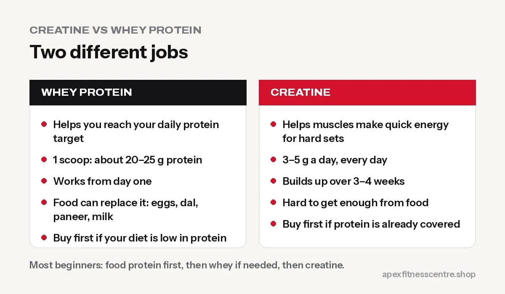

Creatine vs Whey Protein: Which Should You Buy First?
Creatine or whey protein first? What each one does, who needs which, cost per month in Nepal, and whether you should take both together.

Buy whey first if you struggle to eat enough protein. Buy creatine first if you already eat enough protein and want more strength. They do different jobs, they are not competitors, and many lifters end up taking both.
What each one does
| Whey protein | Creatine monohydrate | |
|---|---|---|
| What it is | Milk protein in powder form | A compound stored in your muscles, also found in meat and fish |
| Main job | Helps you reach your daily protein target | Helps muscles produce quick energy for hard sets |
| Result you notice | Easier recovery and muscle gain if your diet was low in protein | A little more strength and a few more reps over weeks |
| Daily amount | 1 scoop (about 20–25 g protein, check label) | 3–5 g |
| When it works | Every day, as part of your protein total | Every day; it builds up in muscle over 3–4 weeks |
| Replaceable by food? | Yes: eggs, dal, paneer, chicken, milk | Partly, but you’d need a lot of meat or fish |

Who should buy whey first
- You eat mostly rice, dal and vegetables and rarely have eggs, meat or paneer.
- You train early and skip breakfast.
- You are vegetarian and find it hard to reach your protein target.
- You want to lose fat and keep muscle, and need a filling, high-protein snack.
Work out your number with how much protein you need. If you are far below it, whey makes the bigger difference.
Who should buy creatine first
- You already eat enough protein from food.
- You have trained consistently for a few months and want more strength and power.
- You do sprints, football, cricket, kabaddi, or martial arts where short bursts matter.
- You are on a tight budget. Creatine is one of the cheapest supplements per month.
Cost per month in Nepal
Using prices from our store (checked October 2026):
- Creatine: a 320 g tub at Rs. 2,000 lasts about 2 to 3 months at 3–5 g a day, so roughly Rs. 700 to 1,000 a month.
- Whey: a 2 kg tub at Rs. 15,000 lasts roughly 2 months at one scoop a day (depending on scoop size), so roughly Rs. 7,000 to 7,500 a month.
That is why creatine is often the best value supplement if your protein from food is already good.
Can you take both together?
Yes. They work well together and many people mix creatine into their whey shake. There is no harmful interaction. One note: if your protein powder already contains creatine (some blends do), check the label before adding more.
Is creatine safe?
For healthy adults at 3 to 5 g a day, creatine is one of the most researched supplements. Fears about hair loss and kidney damage are not supported by the evidence for healthy people. See creatine side effects: myths and facts.
Make sure it’s genuine
Both whey and creatine are faked in South Asia. Check the seal, batch number, expiry and importer label. Read how to spot fake supplements in Nepal.
A simple first 3 months
If you’re just starting out, here’s an order that works well for most people:
| Month | Focus | Supplements |
|---|---|---|
| 1 | Learn the exercises, train 3 days a week, eat protein at every meal | None needed yet |
| 2 | Add a little weight each week; check if you’re reaching your protein target | Whey if you can’t get enough protein from food |
| 3 | Training is now a habit and you want faster strength gains | Add creatine, 3–5 g a day |
If your diet is already high in protein (lots of eggs, meat, dal, paneer, milk), you can skip whey and go straight to creatine.
Mistakes when buying your first supplement
- Buying both before you train consistently. Supplements only help if you’re training.
- Choosing by the tub’s photo or “mass” claims. Look at protein per serving and price per serving.
- Buying “creatine blends”. Plain creatine monohydrate is the most researched and cheapest.
- Buying from unknown sellers. Fakes are common. Check the importer’s sticker and batch number.
- Taking more than the label says. Extra creatine or protein doesn’t give extra results.
Frequently asked questions
Which is better for beginners, creatine or whey?
For most beginners, food and training matter most. If protein from food is low, whey helps more. If protein is already fine, creatine gives the next small boost.
Does creatine work without whey?
Yes. Creatine works on its own as long as you train and eat a reasonable diet.
When should I take creatine and whey?
Timing matters little. Many people take both after training. Consistency every day is what counts.
Can women take creatine and whey?
Yes. Both are suitable for women and do not cause “bulkiness” on their own.
How long does it take for creatine and whey to work?
Whey works from the first day you use it to reach your protein target. Creatine builds up over 3–4 weeks of daily use, and most people notice slightly better strength after that.
Sources
- International Society of Sports Nutrition position stand: safety and efficacy of creatine supplementation (Kreider et al., 2017)
- International Society of Sports Nutrition position stand: protein and exercise (Jäger et al., 2017)
General information, not medical advice.
General information, not medical advice. Ask a doctor if you have a health condition. Results vary from person to person.